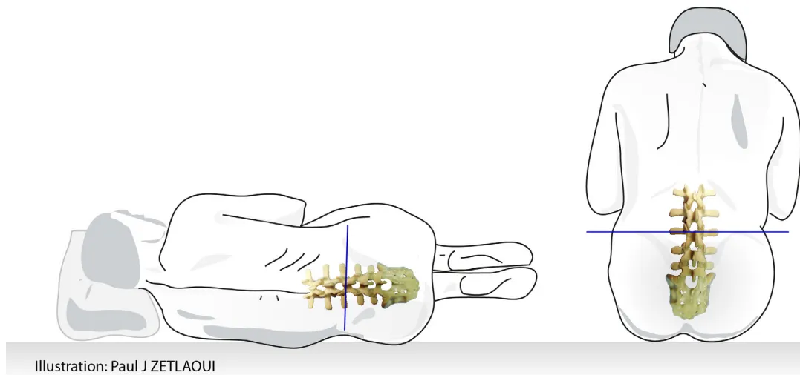

Juin 2019
La ponction lombaire (PL) est un acte diagnostique ou thérapeutique fréquent, invasif, réalisable par tout médecin. Elle est à risque d'événements indésirables, exceptionnellement graves, et d'échecs dont la majorité serait évitable. Pour cela, il est nécessaire que tout médecin connaisse l'anatomie, les contre-indications, la technique de PL, le matériel utilisable, les événements indésirables et leur prévention.
Les indications évoluent constamment avec le développement des connaissances et des techniques. Les indications suivantes sont donc listées à titre indicatif et de manière non exhaustive.
Outre le refus explicite ou présumé du patient, les contre-indications formelles sont les suivantes.
Pour un certain nombre de pathologies (thrombopénie gestationnelle, purpura thrombopénique immunologique), une thrombopénie stable G.L-1 peut être tolérée. À l'inverse, une thrombopénie évolutive non stabilisée nécessite l'évaluation pluridisciplinaire du rapport bénéfice/risque.
La survenue d'un hématome périural ou sous-arachnoïdien après une PL est exceptionnelle, presque toujours liée à la présence d'un ou plusieurs facteurs de risque.
Ces facteurs sont : un traitement anticoagulant à dose thérapeutique ou antiplaquettaire (sauf aspirine et anti-inflammatoires non stéroïdiens [AINS]), un trouble congénital ou acquis de la coagulation ou de l'hémostase primaire, une ponction difficile, traumatique ou sur un rachis pathologique (spondylarthrite ankylosante, par exemple).
En cas d'urgence, l'antagonisation du traitement anticoagulant si elle est possible, ou la substitution du déficit en facteurs de la coagulation (hémophilie par exemple), si elle est nécessaire, doit être réalisée.
La PL doit être réalisée dans le cadre d'une hospitalisation (la réalisation de la PL ne justifie pas, à elle seule, une hospitalisation de plus de 24 heures).
Le choix de la position assise ou allongée est laissé à l'appréciation du médecin et du patient.

Illustration: Paul J ZETLAOUI
Les niveaux corrects de ponction sont les espaces interépineux L3-L4, L4-L5 et L5-S1.
La détermination de l'espace interépineux à ponctionner est en pratique clinique plus difficile que classiquement décrit. Il est recommandé de ponctionner en dessous de la ligne horizontale tracée entre les crêtes iliaques.
En cas de difficulté, la PL peut être réalisée sous imagerie (radioscopie, échographie).
Les règles d'asepsie chirurgicale doivent être absolument respectées :
La pose d'un patch d'anesthésique local peut être proposée au patient en dehors de l'urgence (délai d'1 heure).
Dans les cas prévisibles de ponction difficile, une anesthésie locale peut être envisagée.
Quelle que soit l'indication de la PL, la technique et les modalités de réalisation restent identiques.
Il est recommandé de réaliser la ponction avec une aiguille atraumatique « à extrémité non tranchante », d'un diamètre maximal de 22 Gauge (code couleur noir). À noter que plus la Gauge est élevée, plus l'aiguille est fine, et inversement.
Il est indispensable d'utiliser l'introducteur fourni avec l'aiguille pour franchir la peau.
Il est recommandé aux médecins de se former à l'utilisation des aiguilles atraumatiques avec introducteur.
...
Il est recommandé de réintroduire complètement le mandrin dans l'aiguille avant de la retirer.
L'incidence des syndromes post-PL immédiats augmente pour un volume prélevé supérieur à 30 ml.
La PL est un geste invasif avec risque d'accident d'exposition au sang, les aiguilles doivent être collectées dans un conteneur à disposition et prévu à cet effet.
La PL est un geste invasif nécessitant une bonne connaissance de l'anatomie, mais également de la pratique du geste.
Ainsi, la formation pratique à la PL par simulation est recommandée :
Après formation par simulation, il est recommandé que le médecin soit accompagné pour la réalisation des premières PL sur le patient aussi souvent que nécessaire.
La PL est parfois responsable d'effets indésirables : syndrome post-PL (syndrome d'hypotension intracrânienne), hématomes, infections, douleurs lombaires, voire paraplégie ou décès de manière très exceptionnelle.
Le syndrome post-PL, secondaire à une fuite persistante de LCS, se caractérise par une céphalée orthostatique. Apparaissant habituellement dans les 2 à 4 jours après une PL (mais parfois plus tardive), elle est apyrétique, partiellement ou totalement soulagée par le décubitus dorsal.
La céphalée est classiquement bilatérale, occipitale, occipito-frontale ou diffuse, irradiant dans la nuque, le dos et parfois aux épaules.
...
Parfois isolée, elle est habituellement accompagnée d'un cortège variable de signes cliniques, dont les plus fréquents sont :
Un syndrome post-PL atypique, ou dont la symptomatologie se modifie, nécessite un avis spécialisé.
Il existe des cas exceptionnels de syndrome post-PL sans céphalée (ex. : vertiges ou troubles auditifs isolés).
L'incidence du syndrome post-PL peut être minorée par l'application de mesures simples. L'utilisation d'aiguilles atraumatiques permet de diminuer de manière significative l'incidence et l'intensité du syndrome post-PL (incidence inférieure à 10 % en cas d'utilisation d'aiguilles atraumatiques alors qu'elle peut aller jusqu'à 35 % en cas d'utilisation d'aiguilles traumatiques).
Les hématomes sont très exceptionnels. Ils peuvent être périmédullaires ou intracrâniens. Ils sont favorisés par les troubles de la coagulation, les traitements modifiant l'hémostase et les ponctions multiples.
Quelle que soit la localisation, il s'agit d'une urgence diagnostique et thérapeutique qui nécessite une imagerie et un avis spécialisé.
Exceptionnelles et liées au non-respect des règles d'asepsie, elles peuvent se manifester sous forme de méningite, d'abcès au point de ponction, de spondylodiscite, etc.
Possibles après PL, elles sont habituellement banales.
Après une PL, l'apparition de signes cliniques nouveaux doit conduire à une prise en charge diagnostique et thérapeutique en urgence.
Ces signes d'alerte sont les suivants :
La baisse de l'acuité visuelle doit faire évoquer une autre étiologie car il s'agit d'une complication exceptionnelle.
Le blood-patch consiste en l'injection de sang autologue (du patient lui-même) dans l'espace péridural pour colmater la brèche méningée.
Il s'agit du traitement le plus efficace en cas de non-guérison spontanée du syndrome post-PL dans les 48 à 72 heures.
Le blood-patch doit être envisagé après échec des traitements non invasifs et réalisé :
En cas d'inefficacité immédiate ou de récidive à distance, un 2e blood-patch est possible ; mais pas de 3e blood-patch sans imagerie (imagerie par résonance magnétique [IRM] et avis spécialisé).
Le blood-patch est un geste invasif avec risque d'accident d'exposition au sang, les aiguilles doivent être collectées dans un conteneur à disposition et prévu à cet effet.
Le syndrome post-PL existe chez l'enfant et doit faire l'objet d'une prévention. Le taux de succès de la PL chez l'enfant est lié à plusieurs facteurs tels que le positionnement de l'enfant, le choix de l'aiguille ou encore l'analgésie.
Chez le nourrisson, la position assise sans flexion de hanche et sans flexion de nuque permet de dégager le plus large espace intervertébral avec la meilleure tolérance hémodynamique.
Chez l'enfant, la position assise ou allongée peut être choisie, comme chez l'adulte.
Sont recommandées en première intention les aiguilles dites atraumatiques « à extrémité non tranchante », de 22 à 27 Gauge. Certaines s'utilisent sans introducteur (22, 24 et 25 Gauge) et d'autres avec introducteur (22, 25 et 27 Gauge).
Il est recommandé aux médecins de se former à l'utilisation des aiguilles atraumatiques avec introducteur.
L'utilisation des aiguilles dites traumatiques à biseau tranchant doit rester exceptionnelle.
L'angle de pénétration de l'aiguille permettant d'accéder le plus efficacement au LCS est compris entre 50° et 60°. Un repérage échographique (lorsqu'il est disponible) permet un taux de succès plus important.
Le choix de l'analgésie est un point clé de la réussite du geste de la PL en pédiatrie. Sont à disposition :
...
La présentation clinique du syndrome post-PL chez l'enfant est identique à celle de l'adulte avec une incidence de 2 à 15 % selon les études.
Cependant, chez le nourrisson, le diagnostic reste difficile en l'absence de critère diagnostique spécifique.
L'utilisation d'aiguilles atraumatiques chez l'enfant montre une diminution de l'incidence du syndrome post-PL mais elle doit faire l'objet de formations auprès des médecins.
En cas d'utilisation d'aiguilles traumatiques, les éléments suivants sont associés à un risque moins important de syndrome post-PL chez l'enfant :
Il n'y a pas d'indication à l'alitement strict après la PL chez l'enfant.
En cas de syndrome post-PL avéré, le traitement conservateur est recommandé en première intention (antalgiques). Le repos au lit n'est pas obligatoire. L'efficacité de l'hyperhydratation n'est pas prouvée.
Comme chez l'adulte, le seul traitement ayant montré son efficacité en cas de syndrome post-PL persistant et/ou sévère est le blood-patch (les indications du blood-patch chez l'enfant restent rares).
The logo of the Haute Autorité de Santé (HAS) is centered at the bottom of the page. It consists of the letters 'HAS' in a bold, blue, sans-serif font. A red swoosh or underline is positioned beneath the 'A' and 'S', extending slightly to the left.